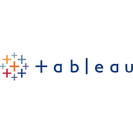
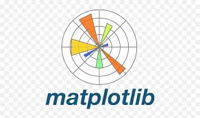

my portfolio




business anaylst
I am a skilled business anlyst and data anlalyst
n Class X (2018-2019), I achieved a remarkable academic record with a score of 93.0% in the CBSE examinations. I demonstrated strong foundational knowledge in subjects like Mathematics, Science, and English, which laid the groundwork for my future academic success.
In Class XII (2020-2021), I excelled in the CBSE examinations with an outstanding score of 96.6%. I focused on advanced topics in Mathematics, Physics, and Chemistry, showing a deep understanding and aptitude for analytical and quantitative subjects. Additionally, I participated in various school activities and projects, which enhanced my teamwork, communication, and leadership skills.
I dedicated significant time and effort to preparing for the Joint Entrance Examination (JEE) Mains and Advanced, showcasing exceptional problem-solving abilities and resilience. Through rigorous preparation and practice, I gained a thorough understanding of complex topics in Physics, Chemistry, and Mathematics, which are crucial for engineering and technology-related fields. This preparation also helped me develop critical thinking and time management skills.
As a Business Analyst, I applied my analytical skills to gather and interpret business data, providing actionable insights to improve decision-making processes. I engaged with stakeholders to understand their requirements and translated business needs into technical specifications. Utilizing tools like MS Excel and SQL, I analyzed data, created reports, and supported business strategies. I also contributed to project management and process improvement initiatives, driving efficiency and productivity.
During my Data Science Internship at Encryptix, I conducted statistical analysis on various datasets to uncover actionable insights. I assisted in developing predictive models, which contributed to a 10% improvement in accuracy for business predictions. Collaborating with senior data scientists, I helped implement data-driven strategies that optimized operational efficiency, leading to a 5% improvement in key metrics. This experience demonstrated my proficiency in machine learning and data manipulation techniques
In my Data Analyst Training and Internship at IBM, I led the analysis of large datasets to uncover actionable insights, contributing to a 15% increase in operational efficiency. I developed and maintained interactive dashboards using Tableau and Power BI, which resulted in a 25% reduction in report generation time. I collaborated with cross-functional teams to define key performance indicators (KPIs) and established automated reporting processes, reducing manual effort by 30%. Through these experiences, I applied my analytical skills to transform data into valuable insights, supporting strategic decision-making and operational improvements